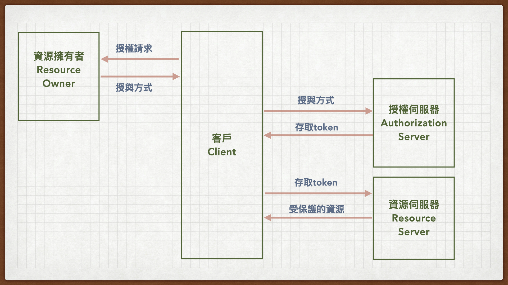
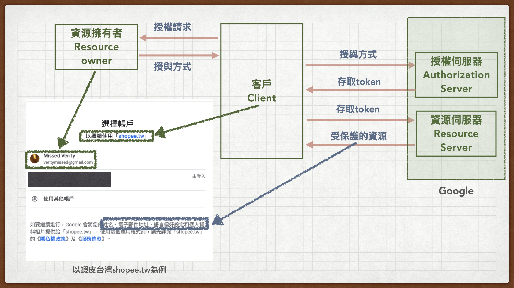
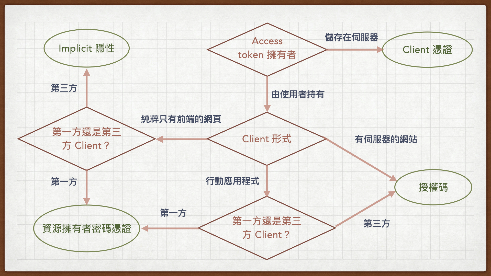
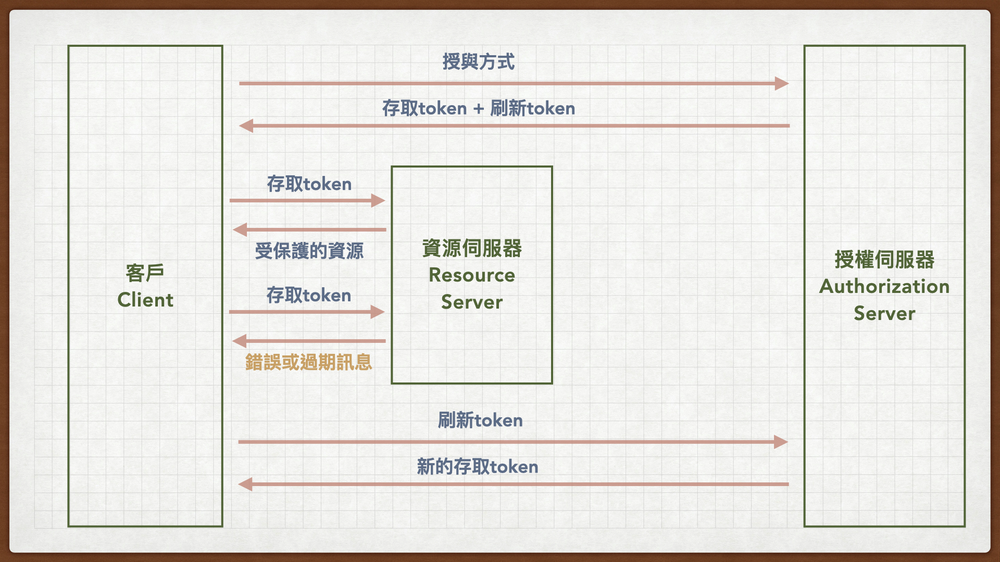

前言
最近要來整理Oauth的筆記，直接先從Oauth2.0開始。
根據Oauth2.0的官方文件，先列出2.0的重點：
- Oauth2.0 協定的流程
- 名詞解釋
- Oauth2.0 授權的四種授與方式
- 刷新的token（可選擇是否使用）
Oauth2.0 協定的流程

名詞定義解釋
我們些列出Oauth2.0裡面常見的角色與名詞，他們在官方文件裡有特定的名稱與定義。
- 受保護的資源（Protected resources）：與個人隱私等相關的資料。例如Email、姓名、性別、生日、居住地、喜好等
四個角色：
資源擁有者（Resource owner）：上述受保護資源的擁有者，就是使用者。例如我在Facebook註冊的姓名、性別與點讚的頁面等，這些就是受保護的資源，我就是資源擁有者。
資源伺服器（Resource server）：存放這些受保護資源的伺服器。例如Facebook/Google內部專門存放使用者相關個人資料與喜好的伺服器。
客戶/用戶（Client）：這邊容易與使用者 - 資源擁有者搞混；這裡的客戶指的是想使用驗證服務，並存取受保護資源的應用程式。例如Momo / Pchome等購物網、希望能讓消費者直接透過Facebook/Google的帳號登入，不用額外在購物網站上完成繁雜的註冊流程。這邊使用驗證身份服務的網站就是客戶（Client），各種需要身份驗證服務的Mobile App也都是客戶。
授權伺服器（Authorization server）：這個伺服器執行驗證並授權的流程：驗證資源擁有者的身份成功後，提供客戶存取受保護資源的token。
除此之外還有：
存取token（Access token）：用來存取受保護資源的憑證。
刷新token（Refresh token）：舊的存取token無效或過期後，用來獲得新的存取token。
Ex. 用Google驗證登入Shoppe.tw 的 Oauth2.0 流程

Oauth2.0 授權的四種授與方式
Oauth 2.0授權的授予方式可以細分位置四種
- 授權碼（Authorization code）
- 隱性（Implicit）
- 資源擁有者的密碼憑證（Resource owner password credentials）
- 客戶憑證（Client credentials）
這四種授予方式稍後會再詳述。至於要用哪種方式？可以根據下列三點來判斷：
存取token（Access token）由誰持有
- token 存放在固定機器
- token由使用者持有
客戶的型態為何？
- 網站應用
- 有server的網站應用
- 純粹只有前端的網頁
- 原生應用（行動裝置App）
- 網站應用
客戶與資源伺服器是 第一方 還 第三方 關係
- Instagram想讓使用者能使用Facebook身份登入，由於Instagram與Facebook是同公司的兩個服務，兩者是第一方關係。
- Spotify想讓使用者能使用Facebook身份登入，Spotify與Facebook是不同公司，兩者是第三方關係。

刷新的token（可選擇是否使用）
我們可以設計存取token是有時效的，過期後就無法使用。客戶端若需要繼續存取被保護資源，可以透過先前提供的刷新token，取得新的存取token。
